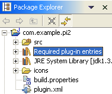
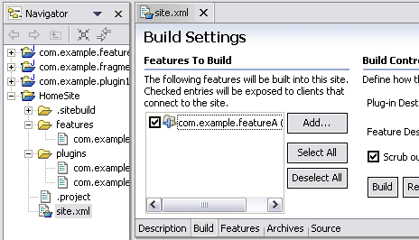

Here are some of the more interesting or significant changes made to PDE for the 2.1 release of Eclipse since 2.0:
| Improved way to reference dependent plug-ins | The new Plug-in Development /
Java Build Path Control preference controls whether new plug-in
development projects will use a dynamically computed build classpath entry
rather than an explicit list of required plug-in JAR libraries (the
default). Turning this preference on makes the Java project build classpath much less fragile, and visually groups together libraries for
required plug-ins. It also makes the classpath highly dynamic in that it
instantly reacts to the changes in the self-hosting style (external plug-ins
versus imported binary projects).  |
| Exporting deployable plug-ins and features | There are new File > Export wizards for exporting plug-in and features. Choose File->Export->Deployable plug-ins and fragments to export selected plug-ins to a ZIP file that can be easily unzipped into any Eclipse-based product. Similarly, choose File > Export > Deployable features to export selected features and their plug-ins. |
| Importing with linking | Importing external plug-ins and fragments can be much faster and would not greatly increase the size of your workspace if you import with linking. This new option can be used by unchecking the 'copy plug-in content into your workspace area' checkbox in the 'Import External Plug-ins and Fragments' wizard. 'Importing with linking' means that the import operation will not copy the resources being imported into your workspace. It will simply create links to the files being imported. You will be able to browse these linked resources, as if they had been copied into your workspace. However, they are physically not there on your file system, so you will not be able to modify them. Beware of operations that depend on files being physically in your workspace, as they will not work on linked resources. |
| Support for creating update sites | PDE now supports building and
maintaining Update Manager update sites. Use the new project wizard Plug-in
Development > Update Site Project to create a dedicated project
with all the relevant files including the site map (site.xml) file. The
site map editor creates the required entries in the map and also builds the needed feature and plug-in JARs. Once built,
the site is operational directly from the workspace and can be tested
using Update Manager (Help > Software Updates > Update Manager).
And with Eclipse FTP/WebDAV Support installed, you can upload everything
to a remote update server.  |
| manifest file validation | Manifest (plugin.xml/fragment.xml) files in plug-in projects that have a PDE nature can now be validated to flag semantic errors such as unknown extension points, illegal attributes for extensions, missing required attributes for extensions, etc. The list of possible problems that PDE can detect are found on the Plug-ins tab of the Plug-in Development > Compilers preference page, where the level for each problem can be set to one of 'Ignore', 'Error', or 'Warning'. |
| Plug-in Search | PDE contributes a tab to the Search dialog, where you can search for plug-ins, fragments, extension points and extensions. Scope of search can extend beyond the workspace to external plug-ins and fragments. |
| Compute Dependency Extent | PDE can now easily determine the reason why your plug-in depends on plug-in X. Through the function 'Compute Dependency Extent' found in the context menu of the 'Dependencies' page of the manifest editor, PDE will find and display all the Java types and extension points provided by plug-in X to your plug-in. This is a good tool to determine the extent to which you need this plug-in, and it might help you refactor your plug-ins. Also, it would help you check if you are using any internal (non-API) types of plug-in X, which might be undesirable. |
| Find Unused Dependencies | This function is available through the context menu of the 'Dependencies' page of the manifest editor. It will find all the plug-ins listed as dependencies for your plug-in, but need to be removed because they are unused by your plug-in. The removal of such stale dependencies will help minimize your plug-in's list of dependencies and hence improve performance. |
| Dependencies View | PDE now provides a Dependencies view, which can be invoked by selecting a plugin.xml/fragment.xml file and choosing 'Open dependencies' from the context menu. It will display a tree showing all the plug-ins needed to be activated before you plug-in is activated. |
| Extending Java Search Scope | Java search scope is limited to workspace projects and the external libraries they reference. In order to add arbitrary plug-in libraries to the search scope, go to the Plug-ins view. Select the external projects of choice and choose 'Add to Java Search' from the context menu. |